# fit the model
m1 <- lm(
y ~ x1 + x2,
data = df_nonlin
)
# make the plots
car::crPlots(m1)Assumptions and diagnostics
Data Analysis for Psychology in R 2
Dr. Elizabeth Pankratz (elizabeth.pankratz@ed.ac.uk)
Department of Psychology
University of Edinburgh
2026–2027
Course overview
|
Introduction to linear models (with Dr. Patrick Sturt) |
Introduction to linear regression |
| Interpreting linear models | |
| Testing predictors and evaluating linear models | |
| F-tests and model comparison | |
| Practice analysis: Linear models | |
|
Extending linear models (with Dr. Elizabeth Pankratz) |
Categorical predictors and treatment coding |
| Sum coding | |
| Assumptions and diagnostics | |
| Bootstrapping and confidence intervals | |
| Practice analysis: Categorical predictors (led by Patrick) |
|
Interactions (with Dr. Elizabeth Pankratz) |
Mean-centering and numeric/categorical interactions |
| Numeric/numeric interactions | |
| Categorical/categorical interactions | |
| Testing simple effects and correcting for multiple comparisons | |
| Practice analysis: Interactions (led by Patrick) | |
|
Logistic regression (with Dr. Elizabeth Pankratz) |
Probabilities and log-odds |
| Modelling binary outcomes with logistic regression | |
| Interactions, assumptions, diagnostics, comparisons | |
| Practice analysis: Logistic regression (led by Patrick) | |
| Report feedback, exam prep, full-course Q&A |
This week’s learning objectives
What assumptions do we have to make and accept in order to use a linear model?
How do we diagnose whether a single data point is strongly influencing a linear model’s estimates?
How do we diagnose whether predictors are correlated to a problematic extent?
Building an analysis workflow
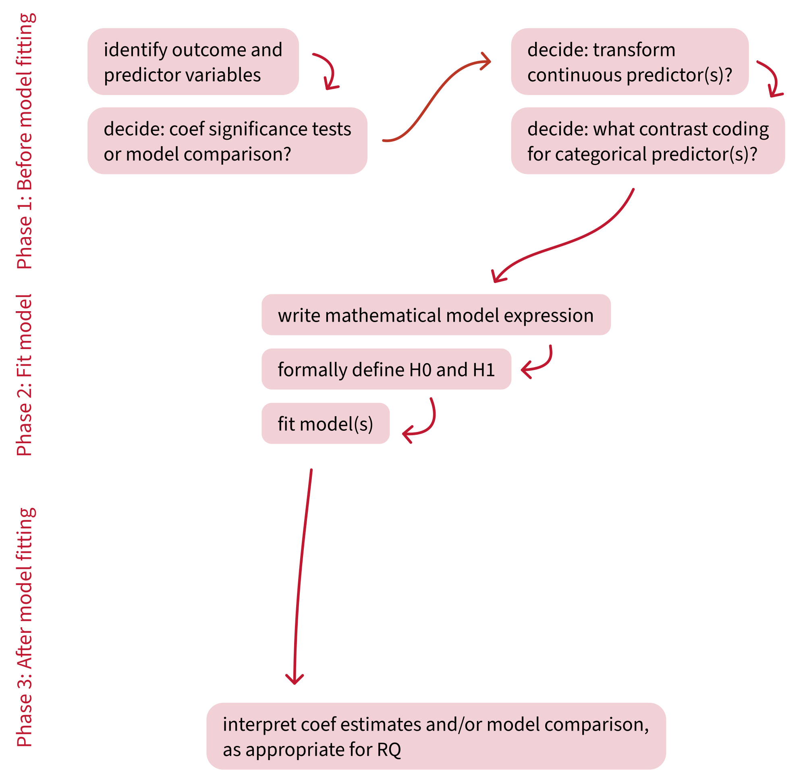
Big picture: Why do we have to make assumptions?
Why do we have to make assumptions?
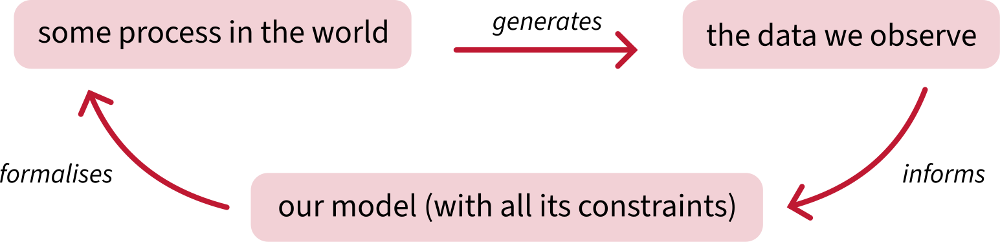
An example of a model’s constraint:
- Linear models can only model associations between predictors and outcomes as straight lines.
- We cannot change that the model uses straight lines only.
- So if we use linear models, we have to assume that a straight line is a reasonable way of representing the actual data generating process in the world.
A model’s unchangeable constraints = the assumptions that we must be satisfied with in order to use and interpret the model.
What we must assume about the data and the model
There are four assumptions we must make, and they come with a useful mnenomic device: they spell …
- L
- I
- N
- E
L is for linear association
L: The association between predictor and outcome is sufficiently linear

For categorical predictors: It’s fine to assume that we’ll model the differences between groups using a straight line.
For continuous predictors (in single/multiple regression models): we check linearity visually using component–residual plots.
Component-residual plots
A “component” is the association between one particular predictor and the outcome, with all the other predictors held constant. In other words, each predictor’s individual contribution to the LM.
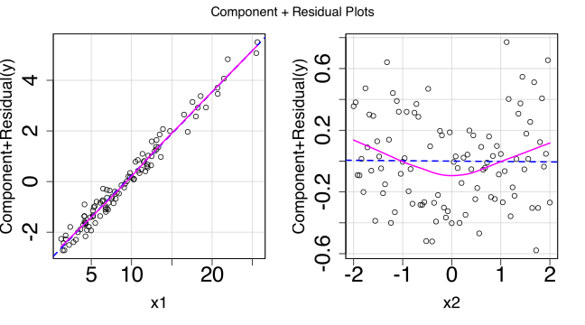
We want the wobbly pink line to match the straight blue line as closely as possible.
Deviations indicate non-linearity.
We must decide: is the association linear enough that it’s OK to model the association using a straight line?
If we aren’t willing to make this assumption: try transforming the predictor or outcome variables (e.g., using log(y) instead of just plain y, or log(x2) instead of just plain x2). Then re-fit the model and see if the deviation lessens.
What’s “linear enough”?
I have simulated a bunch of datasets that perfectly match all the LM assumptions but still contain random noise.
The true association I simulated is perfectly linear (you can look at the simulation code in back matter if you want). So, all of these plots should be linear “enough”.
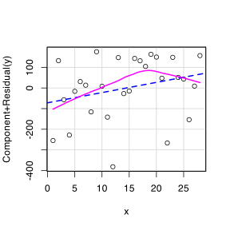
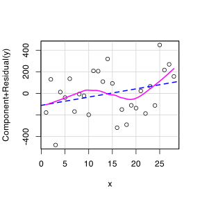
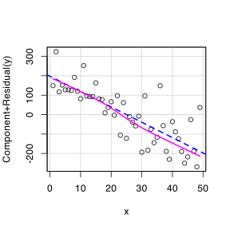
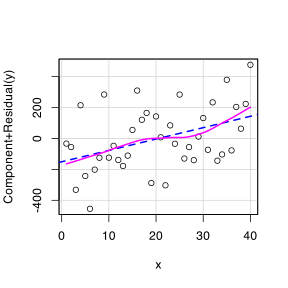
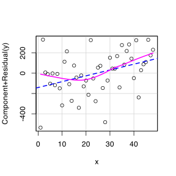
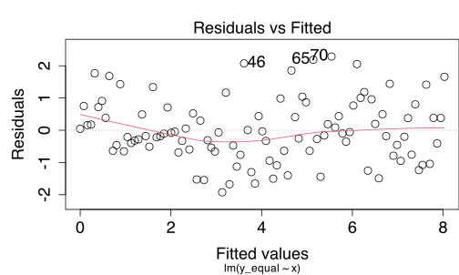
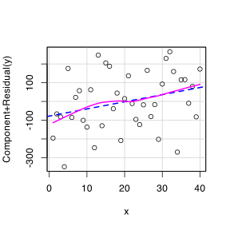
Practice reading component-residual plots
I is for independence of errors
I: Independence of errors
The most common source of non-independence is when multiple observations are gathered from the same source.
For example:
- many test scores gathered from the same schools,
- many reaction times gathered from the same participants,
- and so on.
Until DAPR3, you can assume that errors are independent as long as the experimental design is between-subjects (i.e., as long as each person only contributes data to one experimental condition).
N is for normally-distributed errors
N: Normally-distributed errors

The differences between the fitted line and each data point (aka the residuals) should be normally-distributed.
Check normality using a Q-Q plot.
Q-Q plots
Compare the model’s residuals (dots) to what the residuals WOULD look like in a world where they were perfectly normally-distributed (diagonal line). We want the dots to closely match the diagonal line.

We must decide: is the distribution of errors normal enough that it’s OK to model them using the linear model machinery?
If we’re not willing to make this assumption:
- Transforming variables is often a good trick. For example, does the situation improve if you model
log(y)instead of justy? - Or: bootstrap your model (more next week!).
What’s “normal enough”?
Here are the Q-Q plots for those same simulated models, where I know the population error is normal because I simulated it that way. So, all of these should be normal “enough”.
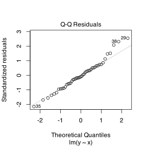
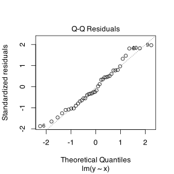
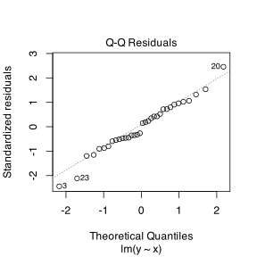
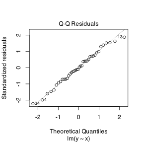
Practice reading Q-Q plots
E is for equal variance of errors
E: Equal variance of errors

- Equal variance of errors is also called “homoscedasticity” or “homogeneity of errors”.
- Unequal variance of errors is also called “heteroscedasticity” or “heterogeneity of errors”.
When errors don’t have equal variance, the model is not equally good at estimating the outcome for all values of the predictor.
Check by plotting the residuals against the fitted (predicted) outcome values.
Residuals vs fitted plots
We want to see a random-looking cloud of data points with the same vertical distance from 0 across the whole x axis.

We must decide: is the variance of errors equal enough that it’s OK to model the data using the linear model machinery?
If you are not willing to make this assumption:
- Check if the model is misspecified (e.g., are you missing important covariates or interactions?). Fitting a more suitable model might tidy up the unequal variance.
- Bootstrap the model (more next week!)
What’s “equal enough”?
Here are the residuals vs fitted plots of those same simulated models. I know the error has equal variance because I simulated it that way. So, all of these should have equal “enough” variance.
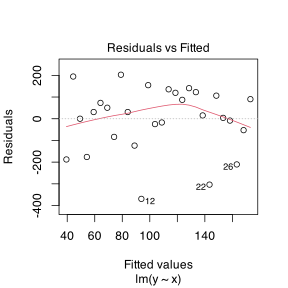
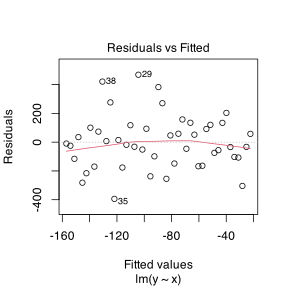
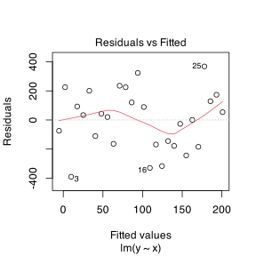
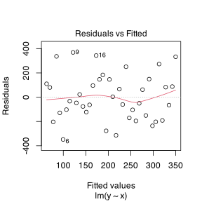
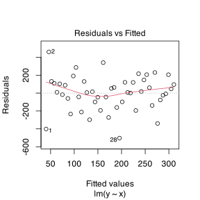
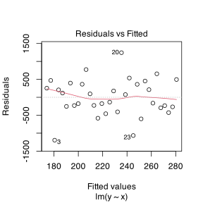
Practice reading residuals vs fitted plots
Residuals vs fitted plots also check linearity
Sometimes component-residual plots aren’t possible (e.g., in Block 3 when our models contain interactions).
If we can’t use a component-residual plot, then we check linearity of association using the residuals vs fitted plots.
We want the red line to be straight and flat, matching the dotted black line at y = 0.
The previous slide also shows the kind of variability you might expect the red line to show when the true association is linear.
Summary: What we must assume about the data and the model
- Linearity of association: The association between predictor and outcome is close enough to a straight line.
- Independence of errors: Every data point’s error is independent of every other data point’s error.
- Normality of errors: The differences between fitted line and each data point (i.e., the residuals) are close enough to following a normal distribution.
- Equal variance of errors: The differences between fitted line and each data point (i.e., the residuals) are dispersed by a similar enough amount across the whole range of the predictor.
Making assumptions is not an absolute science, and there are no right/wrong answers.
\(\rightarrow\) Look at and describe the plots, motivate your reasoning, and you’ll be fine.
What questions do you have right now?
Diagnostics
Diagnostics to run on the data
Checking whether any data points strongly influence the model’s estimates.
Checking whether predictors are problematically correlated with other predictors (“multicollinearity”).
1. Influence
How can one point influence a model?

To see how much each data point influences the model’s estimates, we use a measure called Cook’s distance.
Cook’s distance
Cook’s distance measures the average distance that the predicted outcome values will move, if a given data point is removed (mathy details in back matter).
Find each data point’s Cook’s distance using cooks.distance():
Data point 25 has by far the greatest influence on the model’s estimates.
Rule of thumb: If the biggest Cook’s Distance is more than twice as big as the next-biggest Cook’s Distance, you should investigate that data point further.
Practice applying this rule of thumb
Vote: What to do if you find a
high-influence data point
Ignore them and pretend they don’t exist?
Check if they could be a mistake?
Delete them?
Mention them in your write-up?
Replace them with less extreme values?
Check how much they influence your conclusions?
Sensitivity analysis
Sensitivity analysis
A sensitivity analysis asks: Do our conclusions change if we leave out the unusual data point?
Specific coefficient values will almost definitely change, but our actual conclusions are usually based on (a) the direction of the slope estimate and (b) whether or not we reject its H0 at our chosen \(\alpha\) level, usually .05.
- If our conclusions don’t change, then the influential data point doesn’t actually matter, regardless of how big its Cook’s distance is.
- If our conclusions DO change, then we need to
- report this as a limitation of our analysis and
- draw our conclusions based on the newer model.
We saw that the influential data point is in row 25, so we will remove that one row from the data and re-fit the model.
Compare coefficient estimates
From the original model, fit to the data that contains the high-influence value:
Coefficients:
Estimate Std. Error t value Pr(>|t|)
(Intercept) 4.391 0.299 14.68 1.7e-15 ***
x 1.686 0.249 6.77 1.4e-07 ***From the new model, fit to the data with the high-influence value removed:
Coefficients:
Estimate Std. Error t value Pr(>|t|)
(Intercept) 4.153 0.172 24.1 < 2e-16 ***
x 1.938 0.144 13.4 3.2e-14 ***The values of the coefficients do change a bit, but the association is still positive, and it’s still significant.
\(\rightarrow\) Even though the high-influence point had a big Cook’s Distance, it doesn’t affect our conclusions.
So we could just write something like
One observation had a much higher Cook’s distance than all the others, but a sensitivity analysis showed that this observation does not affect the direction of associations or the pattern of significance of our results.
2. Multicollinearity
Multicollinearity
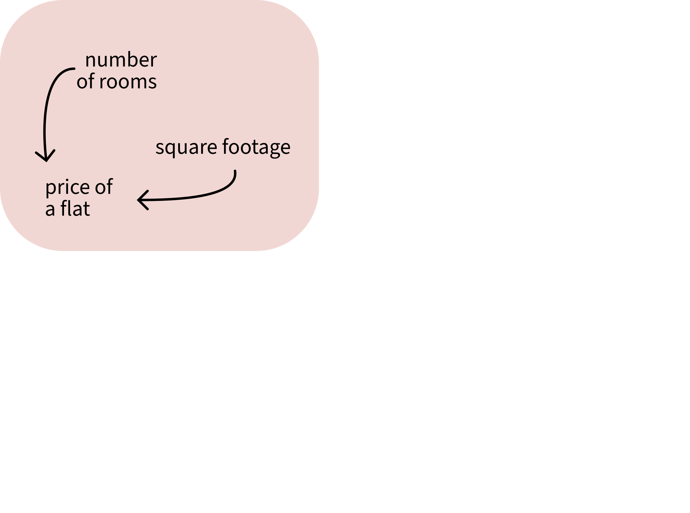
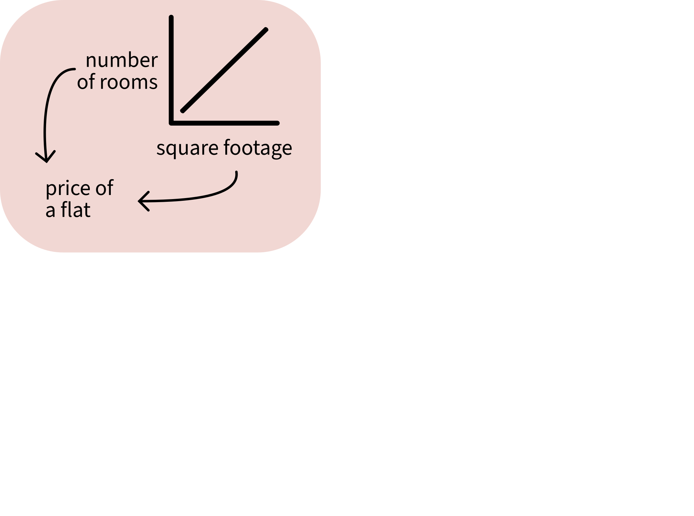
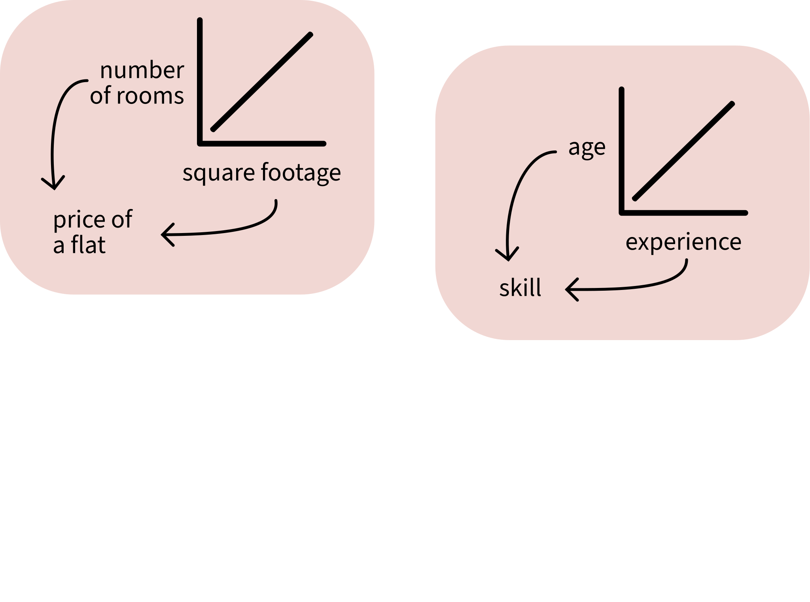
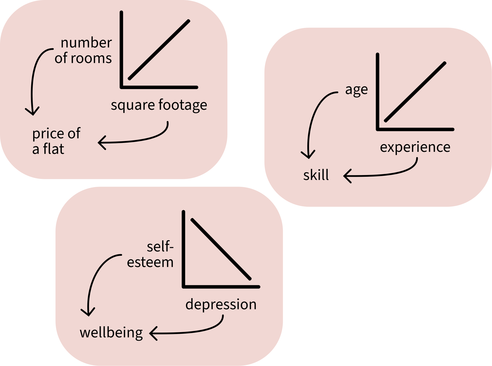
When two predictors are correlated, they contain similar information.
If you know one, you can guess the other.
The model cannot tell which predictor is contributing what information, so its estimates are less precise.
Technically speaking, the variance of its estimates increases, and a significant result is less likely.
Variance Inflation Factor (VIF)
We measure how much the variance has been inflated by correlated predictors using the Variance Inflation Factor or VIF.
VIF measures how much the standard error of a predictor is increased by correlations with other predictors (mathy details in the back matter).
Interpreting VIF:
- Close to 1 is ideal.
- Below 5 is low, no need to worry.
- Between 5 and 10 is moderate, start to worry here.
- More than 10 is severe, very not good.
If VIF is moderate/high for your key predictors, then that’s bad news for your analysis. The estimates for the predictors you care about will be less precise.
- You’ll learn in DAPR3 the best way to deal with this scenario: by making a “composite measure” from the correlated variables and using that as your predictor.
If VIF is moderate/high for covariate/control variables, that’s fine. The key thing is that those predictors are in the model somewhere—it’s fine if they’re multicollinear.
Finding VIF in R
Here’s a dataset that I simulated to have highly correlated predictors x1 and x2:
We calculate the Variance Inflation Factor in R using vif() from the package car.
Fit a model and compute its VIF:
VIF > 5, which means that the variance in the model has been inflated quite a bit because of how much information x1 and x2 share.
Building an analysis workflow
Building an analysis workflow
Building an analysis workflow
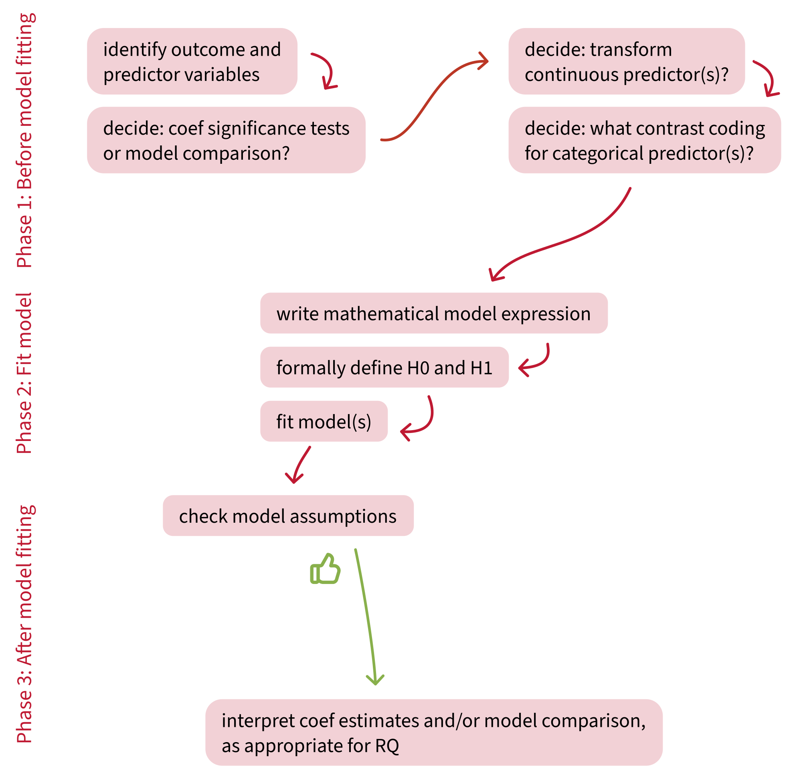
Building an analysis workflow
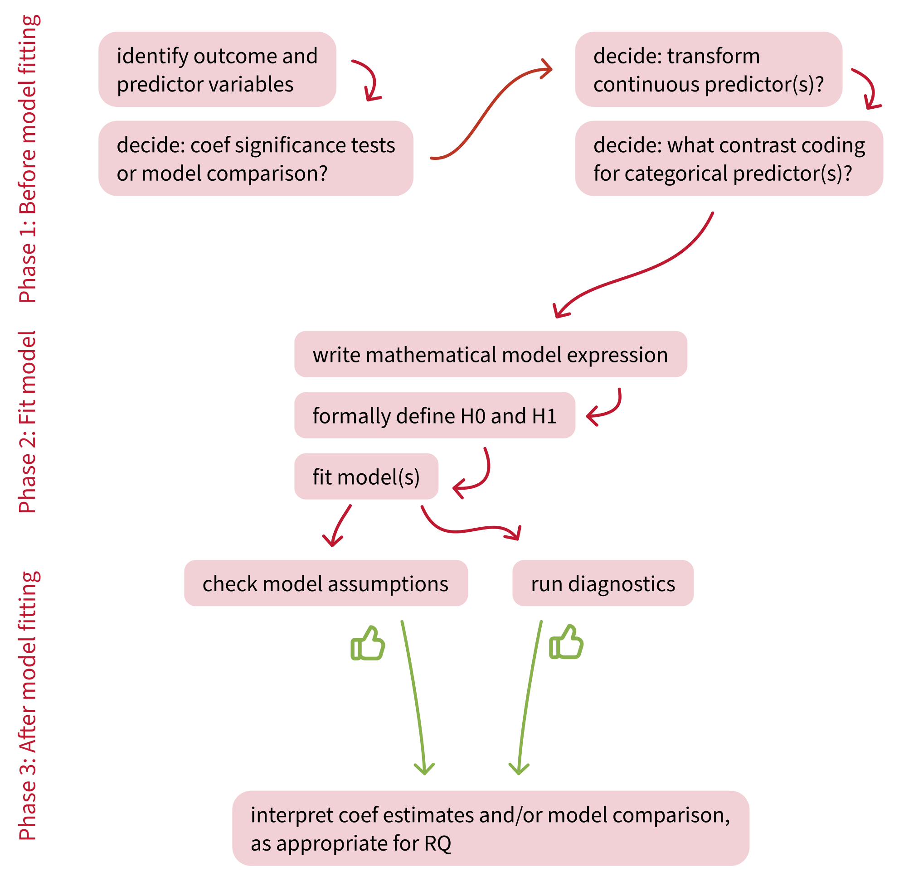
Building an analysis workflow
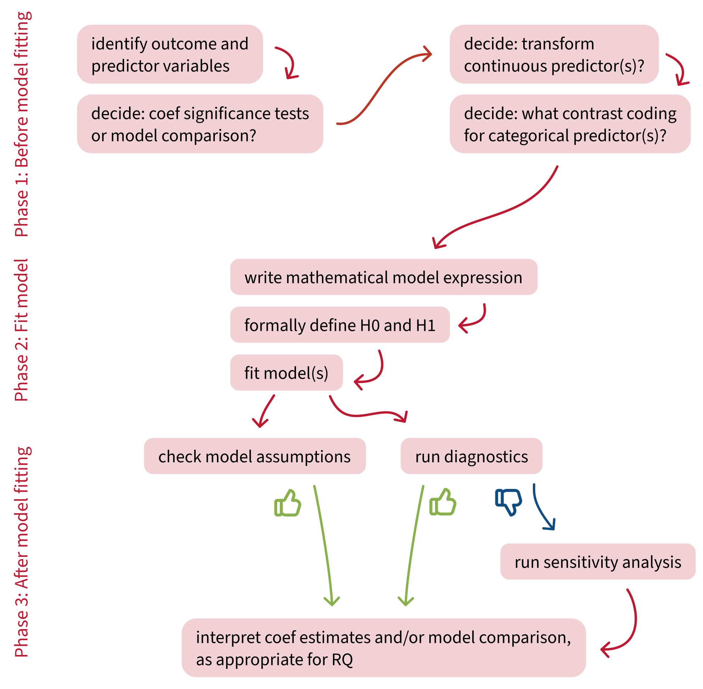
What questions do you have right now?
Back matter
Revisiting this week’s learning objectives
What must we assume is true about our data, in order to use a linear model?
- Linearity: The association between predictor and outcome is close enough to a straight line.
- Independence: Every data point is independent of every other data point.
- Normally-distributed errors: The differences between fitted line and each data point (i.e., the residuals) are close enough to following a normal distribution.
- Equal variance of errors: The differences between fitted line and each data point (i.e., the residuals) are dispersed by a similar enough amount across the whole range of the predictor.
How do we diagnose whether a single data point is strongly influencing a linear model’s estimates?
- We diagnose the influence of each observation using Cook’s Distance.
- If an observation has a Cook’s Distance more than two times as big as the next-biggest Cook’s Distance, then it’s worth investigating what impact it might actually have on our conclusions.
- How do we investigate this? By doing a sensitivity analysis.
How do we diagnose whether predictors are correlated to a problematic extent?
- This situation is called “multicollinearity”.
- We diagnose multicollinearity with the Variance Inflation Factor (VIF), or for categorical variables GVIF.
- We want our key predictor(s) to have VIF or GVIF values below 5.
- If other predictors (covariates, control variables) have higher VIFs or GVIFs, that’s OK.
This week
Tasks:
Work on exercises in labs
Complete the weekly quiz
Get support:
Consult the flash cards
Ask questions anonymously on Piazza
We really like seeing you in office hours!
Cook’s Distance: Intuition
Cook’s distance is essentially outlyingness \(\times\) leverage.
| small outlyingness | x | small leverage | = | small influence |
| small outlyingness | x | BIG leverage | = | BIG influence |
| BIG outlyingness | x | small leverage | = | BIG influence |
| BIG outlyingness | x | BIG leverage | = | VERY BIG influence |
Cook’s Distance: Mathy details
Cook’s Distance of a data point \(i\):
\[D_i = \frac{(\text{StandardizedResidual}_i)^2}{k+1} \times \frac{h_i}{1-h_i}\]
Where
\[\frac{(\text{StandardizedResidual}_i)^2}{k+1} = \text{Outlyingness}\]
and
\[\frac{h_i}{1-h_i} = \text{Leverage},\]
So
\[D_i = \text{Outlyingness} \times \text{Leverage}.\]
VIF: Mathy details
\(\sqrt{\text{VIF}}\) = how many times larger the standard error (SE) of each predictor is, compared to a version of the model without the other predictors.
The thresholds of 5 and 10:
- \(\sqrt{5} = 2.24\), so SE is 2.24 times bigger than it would be if we removed the correlated predictors.
- \(\sqrt{10} = 3.16\), so SE is 3.16 times bigger than it would be if we removed the correlated predictors.
For a given predictor \(x_j\), VIF is calculated as:
\[ VIF_j = \frac{1}{1-R_j^2} \\ \]
LM simulation code
sim_lm <- function(){
# randomly sample from a uniform distribution some parameter values
n_obs <- round(runif(1, min = 20, max = 50))
int <- round(runif(1, min = -100, max = 100))
sigma <- abs(int * round(runif(1, min = 1, max = 10)))
# ^ multiply resid SD by int to get variability of the right magnitude
slp <- round(runif(1, min = -10, max = 10))
# put them together to make the dataset
df <- tibble(
x = 1:n_obs,
error = rnorm(n_obs, mean = 0, sd = sigma),
# ^ independence + normality + equal variance of error:
# each error is sampled independently from a normal distribution
# with the same SD throughout
y = int + (slp * x) + error
# ^ linearity: y is linearly associated with x
)
m <- lm(y ~ x, data = df)
list(m) # return as list so we end up with a list of lists (ie list of models)
}
set.seed(1) # for reproducibility, so your random numbers are the same as mine
models <- replicate(8, sim_lm()) # sim eight diff datasets + models
car::crPlots(models[[1]]) # the CR plot for the first model